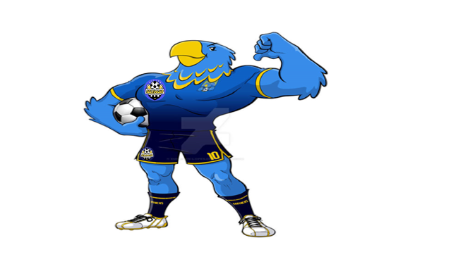

Um pouco da História!
provavelmente voce não sabe a verdadeira historia do grupo de peladeiros, hoje Os seledosios. Na verdade essa história tem estrada! por volta do ano de 1997, na rua padre jose mauricio um grupo de amigos fundaram um time de futebol por nome de kaderudos, time formado por casados e solteiros que teve seu maior incentivador e representante ativo o sr Amaurir dos santos, um dos primeiros moradores da rua.
A primeira versão
A primeira tentativa de criar um o grupo de pelada denominada de kaderudo surgiu em 1997 em aluzão a novela da rede globo A INDOMADA.Que etava em exibição na quele ano com um personagem com pseudo nome de cadeirudo (e que não era um homem e sim uma mulher) a atriz Sônia de paula. O proposito era dá uma irreverência a quela turma, que depois do futebol se reuniam para fazer a tradicional "BARCA".

Essa primeira versão bizarra do mascote em homenagem ao seu criador: seriam os Kaderudos.
Uma lembrança viva!
A ideia de manter viva a pelada, mesmo depois de muito tempo, foi reformular o time, visto que muitos da quela epoca não estava presentes nem morando na mesma rua. mais um grupo de irmãos, juntos com alguns da epoca com um dos filhos do fundador tiveram a ideia de restaurar o time com uma nova formulação e mudança de nome "OS SELEDOSIOS" e um novo mascote foi amadurecendo e incorporado a equipe.
A ideia principal era manter viva uma das grandes paixões do fundador Amaurir, o time de futebol, assim foi feito, uma nova roupagem, outros amigos que aceitaram a ideia e manteve o time. O desenho também faz parte da inovação e gerar uma identificação rápida com quem o olha. Surgiu então o Falcão, o novo mascote dos Seledosios.
A principal inspiração para os traços do novo mascote veio de uma enquete entre os participantes do grupo que atráves de voto popular escolheram a figura ilustrativa de uma ave que teve seu nome de FALCÃO.
Curiosidades do falcão.
O falcão-peregrino (Falco peregrinus) é uma ave de rapina diurna de médio porte que pode ser encontrada em todos os continentes excepto na Antárctida. O falcão-peregrino mede entre 38 e 53 cm de comprimento, com uma envergadura de asas de 89–119 cm e peso de 0,6-1,5 kg. é um caçador solitário que ataca outras aves, em geral pombos ou pássaros. É o animal mais rápido do mundo, com velocidade de mergulho que chega a atingir 320 km/h.
Então é isso! Espero que você tenha gostado do nosso artigo com essa curiosidade sobre o maior espetaculo da terra!.